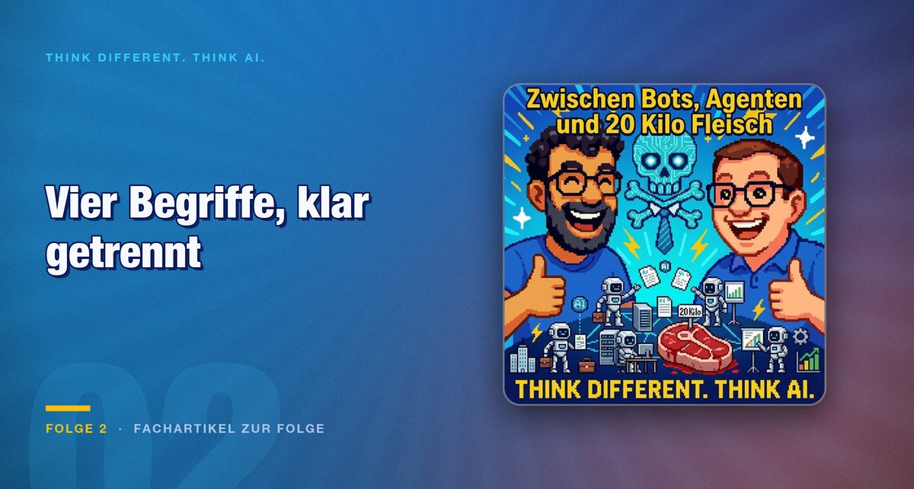

Episode 2 · Article on the episode
Bot, tool, agent, agentic: four terms that keep getting confused
The dividing line does not run through the technology, it runs through the assignment. A bot gets a prompt, an agent gets a goal. Everything else follows from that.

This episode begins with a correction to the previous one, and that is worth mentioning because it rarely happens: it was not Anthropic that was bought by Salesforce, it was the startup Convergence.ai, a provider with exactly the browser control capability an agent needs.
After that comes a clarification of terms that is still needed three years later.
The four levels
This sorting is more useful than any product description, because it is oriented on the question of how much you yourself still know.
The barbecue as evidence
The anecdote that gives the episode its title makes the agent level tangible. An agent organises a complete barbecue for 20 guests: recipes for the starter, the grilled food and the salads, a shopping list, a delivery slot at the supermarket, right through to a finished order proposal. Shortly afterwards the same approach plans a multi-day family trip to Dresden and Berlin, including the dog, a cultural programme and booking options.
The example is well chosen because it shows where the effort sits. None of these sub-tasks is difficult. What is difficult is that they depend on one another: the quantity follows from the number of guests, the shopping list from the recipes, the delivery slot from the date. Precisely this chaining is what separates a goal from an assignment.
Perplexity is also mentioned, as an early pioneer connecting source citations and shopping directly in the conversation.
Where it gets uncomfortable
The episode names the open flank clearly: who is liable when an agent or a whole network acts independently.
Connected to that is a question that looks like a design matter and is not: do you as a human still need source citations in order to accept a result, or does the result suffice in the end.
Both hosts explicitly place this as an IT security and identity question, not as a detail of operation. That is right. When an agent orders in your name, the question is not whether the interface is pleasing, but which identity it acts under and how you later prove what it did.
In practice that means: an agent that acts needs its own distinguishable identity and a log. If it works under your account, it can no longer be separated after the fact what you did and what it did.
Conclusion
The clarification of terms is not language maintenance, it is a decision aid. It answers how much control you give away.
With a bot you keep everything: you ask, you evaluate. With a tool you add a capability and keep the decision. With an agent you give away the route and keep the goal. With an agentic network you give away the coordination as well.
Each of these stages is defensible. It goes wrong when an organisation believes it is at stage two while it is working at stage three.
The thesis the episode ends on is remarkably level-headed and has held up: AI is not humanity's last invention, it is a tool that enables new inventions in interplay with people. AI democratises IT, because suddenly many more people can use natural language to do things that previously required specialist knowledge.